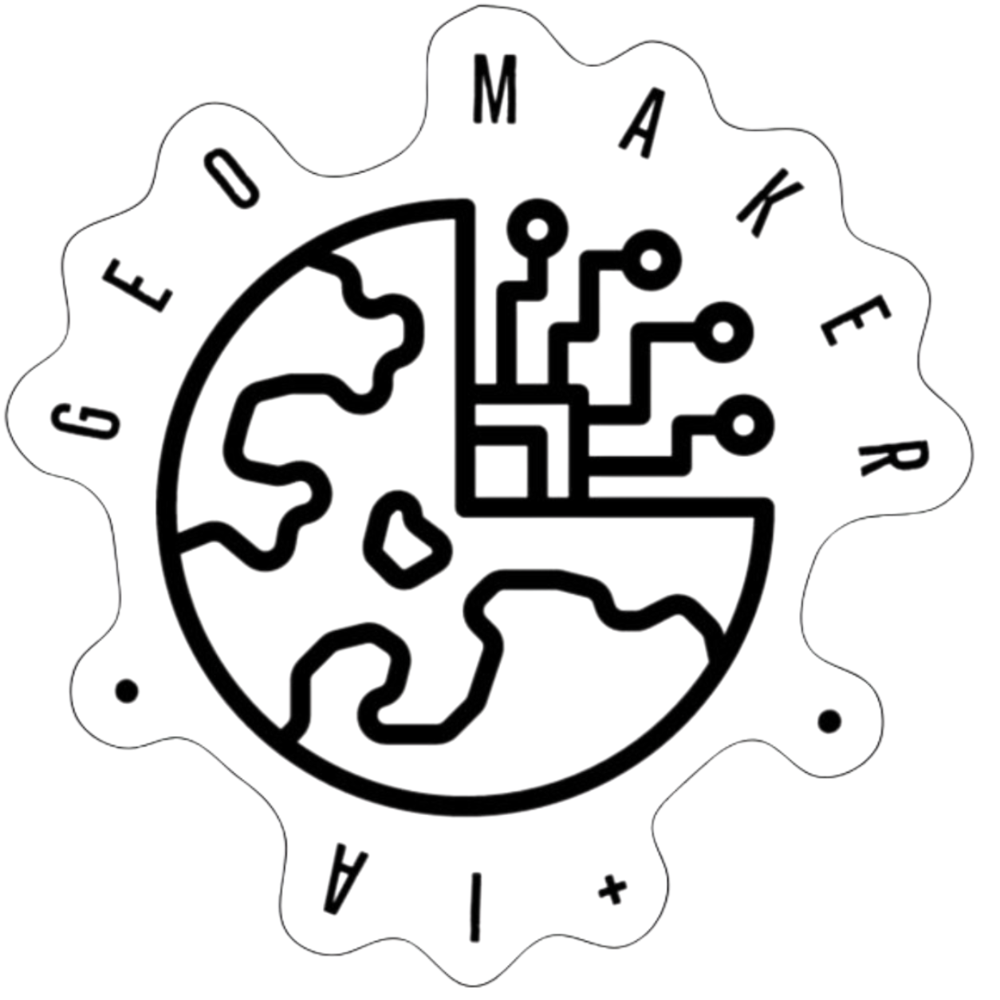

Museu em movimento
Exposições e mediações chegam às escolas, aproximando o patrimônio das pessoas.
Museu escolar · itinerante · Crateús–CE
O Geomaker transforma escolas e comunidades em espaços de investigação, criação e preservação do patrimônio.
Experiências adaptáveis à realidade de cada comunidade escolar.

Nossa forma de fazer
Objetos, narrativas, mapas e tecnologias tornam o território uma experiência viva de aprendizagem.
Exposições e mediações chegam às escolas, aproximando o patrimônio das pessoas.
Ciência, geografia e tecnologia são exploradas por investigação e prototipagem.
Paisagens, histórias e saberes locais ganham registro, contexto e novas leituras.
Projetos em destaque
Acervo aberto
Uma amostra visual do catálogo que poderá ser administrado pelo Tainacan e publicado automaticamente no site.

Observe a geometria, as ranhuras e a espiral da peça por diferentes enquadramentos.
 Registros multiângulo
Registros multiângulo Minerais e geociências
Minerais e geociênciasAgenda educativa
A programação abaixo está em planejamento e será confirmada pela equipe antes da publicação oficial.
O museu vai até você
Conte-nos sobre as turmas, o espaço disponível e os temas de interesse. A experiência será planejada em conjunto.